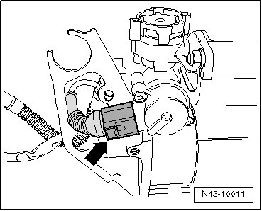
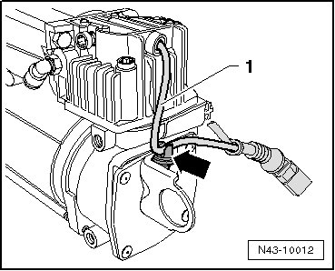
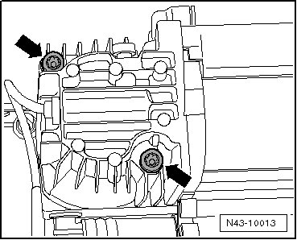
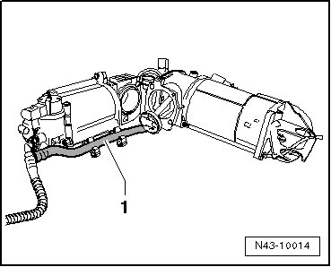
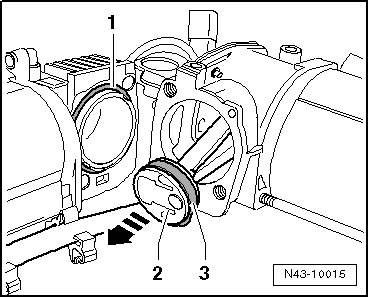
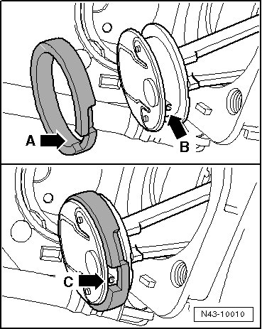
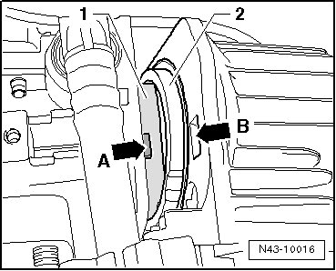
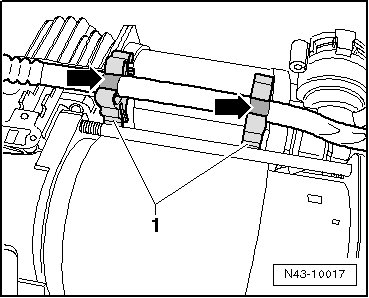

Overhaul
Piston Ring
Special tools, testers and auxiliary items required
• Torque wrench (VAG 1410)
Observe notes, refer to --> [ As of Vehicle Identification Number (VIN) WVGLG77L05D072104, there is a new gray piston ring ] Air Supply Unit Assembly Overview.
CAUTION!
• Do not clean air supply unit using chemical cleaning agent or high-pressure cleaner.
• Clean air supply unit using lint-free rag.
• Make absolutely sure that no dirt enters the open air lines/air line connections, connectors and electrical connections.
Removing
- Remove air supply unit without solenoid valve block. Refer to --> [ Air Supply Unit without Solenoid Valve Block ] Air Supply Unit without Solenoid Valve Block.
- Disengage connector - arrow - and disconnect it.

- Remove cable - 1 - from clip - arrow -.

- Remove bolts - arrows -.

- Remove cylinder head from piston and lay aside both components next to another.

• Make absolutely sure that the air line - 1 - is not damaged.
- Remove gasket - 1 - and clean contact surface on cylinder head.

- Pull piston - 2 - in - direction of arrow - toward Top Dead Center (TDC).
- Remove piston ring - 3 - from piston - 2 - without equipment, e.g. screwdriver.
Installing
- Place new piston ring onto piston, gap - arrow A - on piston ring must point toward outside.

• Gap - arrow A - and anti-twist mechanism - arrow B - must align.
• Piston ring is properly installed if anti-twist mechanism is visible in gap on piston ring - arrow C -.
• Make sure not to overstretch piston ring.
• Check piston ring play, piston ring must be able to be easily turned in both directions within anti-twist mechanism in gap of piston ring - arrow C - while doing so.
- Insert new gasket - 1 -.
- Push piston - 2 - with piston ring - 3 - opposite to - direction of arrow - toward Bottom Dead Center (BDC).
- Assemble upper and lower part, piston - 1 - must slip into cylinder head - 2 - while doing so.

Tab - arrow A - must be inserted into recess - arrow B -. They serve as an anti-twist mechanism.
- Retainers - 1 - must be positioned between upper part and lower part and at white markings of air line.

- Tighten bolts - arrows - to tightening specification.
- Clip cable - 1 - in clip - arrow -.
- Connect connector - arrow -.
- Install air supply unit. Refer to --> [ Air Supply Unit without Solenoid Valve Block ] Air Supply Unit without Solenoid Valve Block.
Tightening Specifications